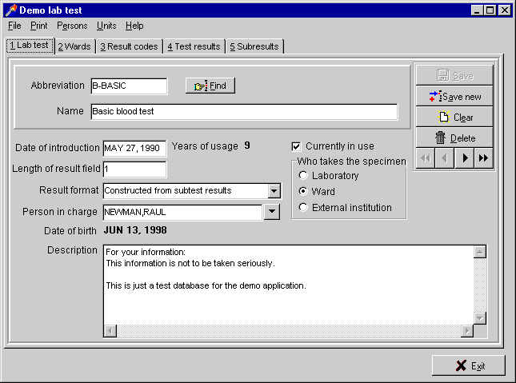

FixIT |
FixIT |
Contents |
Overview The Hardhats in Finland have good reason to be proud. They have been busily preparing some powerful, mature RAD tools that make creating a GUI for VistA-based apps a fun activity that pleases users and developers alike. The FixIT RAD tool was first available for Delphi and has been joined in 2000 with a Java version, providing support for a wide range of client platforms. In either case, FixIT uses the standard VistA RPC Broker to access a VistA server. Most fortunately for the Hardhats community, they have graciously made these tools available for our use. The official FixIT support page provides access to the downloads, license terms, a mailing list and information about the efforts to modernize VistA installations in Finland. (For the curious, read the history of Fileman in Finland, the MUSTI Consortium). Delphi
FixIT  Download Windows demo - to use this demo you must have:
Java FixIT
|
Search | Home | MUMPS | Fileman | Kernel | C/S, Mailman, Web | Programmer Tools | Applications